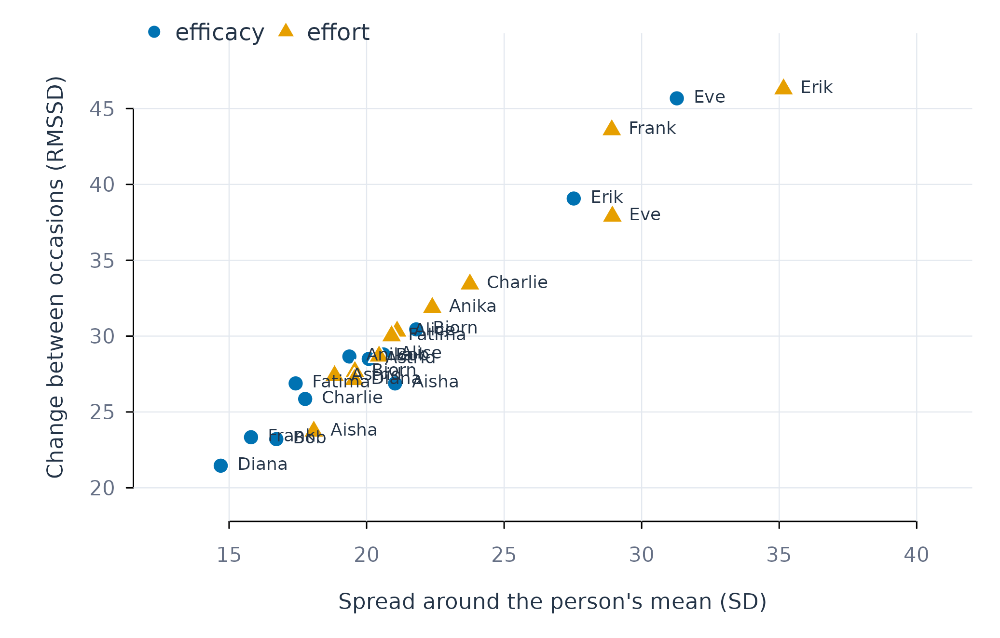
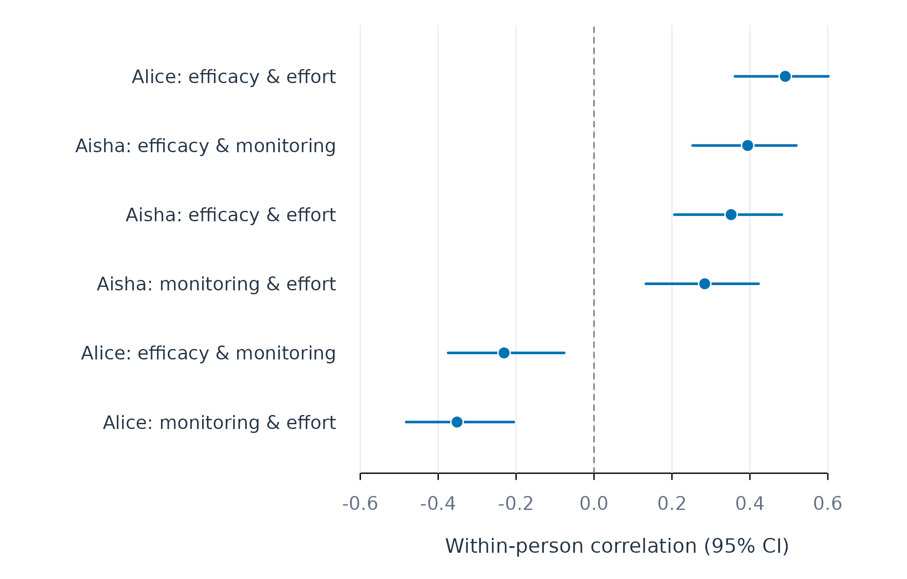
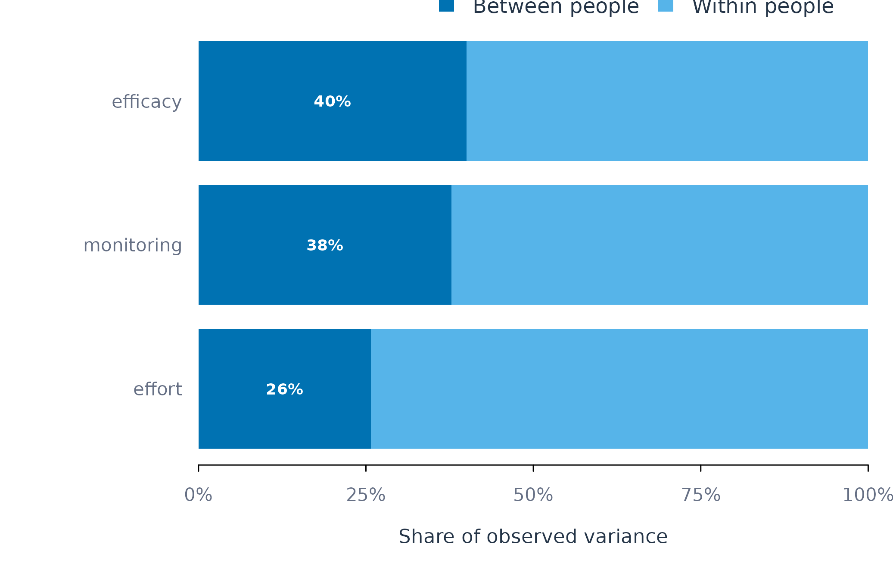
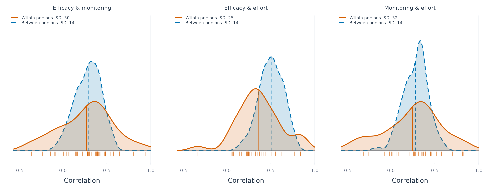

Describing Persons: Level, Change, Association, and Variance
Source:vignettes/describing-persons.Rmd
describing-persons.RmdPerson-specific analysis rests on the properties of each individual time series. Four descriptive functions are presented here. They are intended to precede model fitting, because the amount of data, the variability of each series, and the balance between stable and fluctuating variation determine which models can be estimated and how their coefficients are interpreted.
| Question | Function |
|---|---|
| Is each person’s series long and variable enough for analysis? | describe_persons() |
| Which variables co-vary within each person? | correlate_persons() |
| What share of the variance reflects stable differences between persons? | variance_components() |
| Do correlations computed across persons describe the correlations within persons? | correlate_levels() |
All examples use 12 learners from the bundled srl data
set, each of whom completed the same self-report items once a day,
yielding 154 to 156 observations per learner.
describe_persons()
Purpose
describe_persons() returns a tidy data frame with one
row for each combination of learner and variable. Two learners measured
on two variables therefore yield four rows (Aisha’s efficacy, Aisha’s
effort, Alice’s efficacy, Alice’s effort). The columns describe the
series in each row:
-
amount of data: the number of observations
(
n), the number of missing values (missing), the number of days covered (span), and the typical and longest interval between consecutive observations (gap_median,gap_max); - level: the mean, median, minimum, and maximum;
-
variability: the standard deviation
(
sd), the root mean square successive difference (rmssd), and the lag-1 autocorrelation (autocor).
The two measures capture distinct properties of a series. The standard deviation (SD) quantifies the spread of observations around the person’s own mean across the full observation period. The root mean square successive difference (RMSSD) quantifies the magnitude of change between consecutive occasions. A series that drifts slowly across a wide range and a series that alternates sharply from day to day may have the same SD; the RMSSD separates the two (Jahng et al. 2008). The two quantities are related through the lag-1 autocorrelation : for a stationary series, .
Example
describe_persons(analysis_data, id = "name", vars = c("efficacy", "effort"), time = "day", subject = c("Aisha", "Alice"))
#> PERSON DESCRIPTIVES
#> Grouping name
#> Time day
#> People 2
#> Variables 2
#>
#> subject variable n miss mean median sd min max rmssd autocor span gap_median gap_max
#> ----------------------------------------------------------------------------------------------------------------------------------
#> Aisha efficacy 156 0 56.919 61.765 21.034 0.000 100.000 26.881 0.169 155.000 1.000 1.000
#> Alice efficacy 156 0 35.761 36.364 20.614 0.000 100.000 28.790 0.024 155.000 1.000 1.000
#> Aisha effort 156 0 77.646 82.540 18.080 0.000 100.000 23.724 0.132 155.000 1.000 1.000
#> Alice effort 156 0 59.875 60.811 21.108 0.000 100.000 30.319 -0.032 155.000 1.000 1.000
#>
#> sd = overall spread; rmssd = occasion-to-occasion change
#> autocor = lag-1 carry-over (inertia)Both learners contributed 156 observations with no missing values. Mean efficacy was 57 for Aisha and 36 for Alice, whereas the SDs (21 for both) and the RMSSDs (27 and 29) were similar. The two learners therefore differed in their typical level of efficacy and showed comparable variability.
The time argument defines the chronological order of
observations within each person; successive differences and
autocorrelations are computed in that order. Additional columns (floor
and ceiling proportions, skewness, kurtosis, linear trend, and the
longest run of identical values) are returned with
detail = "full".
Visualisation
plot_descriptives() displays the SD on the horizontal
axis and the RMSSD on the vertical axis, with one point per person and
variable.
descriptives <- describe_persons(analysis_data, id = "name", vars = c("efficacy", "effort"), time = "day")
plot_descriptives(descriptives)
Figure 1. Spread (SD) against day-to-day change (RMSSD) for efficacy and effort in 12 learners.
The points lie close to a straight line, with RMSSD between 1.3 and 1.5 times the SD. Under the relation given above, this ratio corresponds to small lag-1 autocorrelations: consecutive responses carried over little from one day to the next. Strong carry-over would place points well below this line.
The figure also identifies atypical learners. Erik and Eve showed the largest spread and the largest day-to-day change on both variables. Diana, Bob, and Frank showed the least variability in efficacy, while Frank’s effort was among the most variable. Stability on one variable is therefore no indication of stability on another.
Assumptions and limitations
Successive differences and autocorrelations are meaningful only when
rows are ordered chronologically, so the time argument is
required whenever the stored row order differs from the order of
measurement. Missing occasions reduce the number of consecutive pairs
available for the RMSSD and the autocorrelation. A variable that is
constant within a person has an undefined correlation with any other
variable and cannot serve as a predictor in that person’s model. The
trend column describes a linear trend and is insensitive to
abrupt shifts or other non-linear change.
correlate_persons()
Purpose
correlate_persons() estimates, separately for each
person, the Pearson correlation between every pair of variables,
together with a 95% confidence interval obtained through Fisher’s
transformation. A positive within-person correlation indicates that on
occasions when one variable is above that person’s typical level, the
other variable also tends to be above its typical level.
Example
correlations <- correlate_persons(analysis_data, id = "name", vars = c("efficacy", "monitoring", "effort"), time = "day", subject = c("Aisha", "Alice"))
correlations
#> PERSON-SPECIFIC CORRELATIONS
#> Grouping name
#> People 2
#> Pairs 3
#>
#> subject x y n r 95% CI p
#> ------------------------------------------------------------------------------
#> Aisha efficacy monitoring 156 0.394 [0.25, 0.52] < 1e-04
#> Aisha efficacy effort 156 0.352 [0.21, 0.48] < 1e-04
#> Aisha monitoring effort 156 0.284 [0.13, 0.42] 0.000325
#> Alice efficacy monitoring 156 -0.231 [-0.37, -0.08] 0.003736
#> Alice efficacy effort 156 0.491 [0.36, 0.60] < 1e-04
#> Alice monitoring effort 156 -0.352 [-0.48, -0.21] < 1e-04For Aisha, all three pairs were positively correlated, with coefficients between 0.28 and 0.39. For Alice, efficacy and effort were positively correlated (0.49), whereas monitoring was negatively correlated with both efficacy (-0.23) and effort (-0.35). A single correlation computed across all learners would conceal this difference in the direction of association.
Visualisation
plot_correlations(correlations)
Figure 2. Within-person correlations with 95% confidence intervals for two learners.
Each row corresponds to one person and one pair of variables, and rows are ordered by the size of the correlation. All six confidence intervals exclude zero.
Assumptions and limitations
The coefficients describe association between variables measured on
the same occasion. Temporal precedence is examined with
fit_lm() using lagged predictors or with the dynamic
network models. Each coefficient is a bivariate association and is
unadjusted for the remaining variables. Because consecutive daily
observations are serially dependent, the confidence intervals may be too
narrow. The min_n argument sets the minimum number of
complete pairs required for a coefficient to be reported, and constant
variables yield missing coefficients.
variance_components()
Purpose
variance_components() partitions the total variance of
each variable into a between-person component, reflecting differences in
person means, and a within-person component, reflecting fluctuation
around each person’s mean. The intraclass correlation (ICC) is the
between-person share of the total variance. Values near 0 indicate that
persons have similar means and that variation arises mainly over time;
values near 1 indicate stable differences between persons with little
fluctuation within them.
Example
components <- variance_components(analysis_data, vars = c("efficacy", "monitoring", "effort"), id = "name")
components
#> VARIANCE COMPONENTS
#> Grouping name
#> Method anova
#>
#> Within Between ICC Reliability
#> --------------------------------------------------------
#> efficacy 435.4422 290.6398 0.400 0.990
#> monitoring 516.7891 313.4551 0.378 0.990
#> effort 560.3849 194.4532 0.258 0.982
#>
#> ICC share of variance lying BETWEEN groups
#> Reliability precision of each group's own meanThe ICCs were 0.40 for efficacy, 0.38 for monitoring, and 0.26 for
effort. Between 60% and 74% of the variance of each variable was
therefore located within learners. The between-person component was
nonetheless substantial. Under these conditions a regression on the raw
scores combines two distinct associations: the association between a
learner’s daily deviations, and the association between learners’
average levels. fit_within_between() estimates the two
separately.
Visualisation
plot_variance(components)
Figure 3. Between-person and within-person shares of variance.
Assumptions and limitations
The reliability column refers to the precision of each person’s mean and is distinct from the reliability of a single occasion. A variable that is constant within persons supports only between-person comparisons, and a variable with no between-person variation supports only within-person analysis.
correlate_levels()
Purpose
A correlation computed across persons is frequently used to describe how two variables are related within each person. Fisher, Medaglia, and Jeronimus (2018) proposed a direct test of this generalization. Two distributions of correlations are compared for the same pair of variables:
- within persons: one correlation per person, computed across that person’s occasions;
- between persons: one correlation per occasion, computed across persons. The first observations of all persons form one cross-sectional data set, the second observations form a second one, and so on.
When group-level results generalize to individuals, the two distributions have similar means and similar spreads. Fisher and colleagues found the within-person standard deviation to be two to four times larger than the between-person standard deviation across six samples.
Example
This example uses all 36 learners in srl, so that every
between-person correlation is based on 36 persons and every
within-person correlation on up to 156 occasions.
levels_result <- correlate_levels(srl, id = "name", vars = c("efficacy", "monitoring", "effort"), time = "day")
levels_result
#> WITHIN- VERSUS BETWEEN-PERSON CORRELATIONS
#> Grouping name
#> Lag adjusted no
#>
#> x y persons mean SD occasions mean SD SD ratio
#> --------------------------------------------------------------------------------------
#> efficacy monitoring 36 0.27 0.30 156 0.29 0.14 2.11
#> efficacy effort 36 0.36 0.25 156 0.50 0.14 1.82
#> monitoring effort 36 0.25 0.32 156 0.28 0.14 2.30
#>
#> within: one r per person; between: one r per occasion
#> SD ratio = within SD / between SDFor efficacy and monitoring, and for monitoring and effort, the mean correlations at the two levels were close (0.27 and 0.29; 0.25 and 0.28). For efficacy and effort, the mean within-person correlation (0.36) was lower than the mean between-person correlation (0.50). For all three pairs, the within-person correlations were considerably more dispersed: their standard deviation was 1.8 to 2.3 times that of the between-person correlations. For two of the three pairs, the correlation estimated across learners therefore approximated the average within-learner correlation, while the correlations of individual learners were distributed about twice as widely around that value as the between-person correlations.
Visualisation
plot_levels() displays the two distributions as density
curves, following the comparison of Fisher and colleagues. Densities
place the 36 within-person and 156 between-person correlations on a
common scale. The ticks below each curve mark the correlations of the
individual learners, and the vertical stems mark the means.
plot_levels(levels_result)
Figure 4. Distributions of within-person correlations (one per learner, solid) and between-person correlations (one per occasion, dashed) for three pairs of variables.
Temporal dependence
Serial dependence within persons can inflate the spread of
within-person correlations. With lag_adjust = TRUE, each
variable is first regressed on its own lag-1 value and on the lag-1
value of the other variable, and the within-person correlations are
computed from the residuals.
summary(correlate_levels(srl, id = "name", vars = c("efficacy", "monitoring", "effort"), time = "day", lag_adjust = TRUE))
#> x y n_within mean_within median_within sd_within n_between
#> 1 efficacy monitoring 36 0.2710705 0.2988340 0.3057933 156
#> 2 efficacy effort 36 0.3674765 0.3562763 0.2499535 156
#> 3 monitoring effort 36 0.2450722 0.2813312 0.3205831 156
#> mean_between median_between sd_between mean_difference sd_ratio
#> 1 0.2873413 0.2979134 0.1446419 -0.01627083 2.114140
#> 2 0.5034717 0.5096236 0.1373181 -0.13599523 1.820251
#> 3 0.2818936 0.3080957 0.1397777 -0.03682132 2.293521The adjustment left the results essentially unchanged: the mean within-person correlations changed by at most 0.003, and the ratios of standard deviations remained between 1.8 and 2.3. This agrees with the small lag-1 autocorrelations implied by Figure 1. The larger spread of within-person correlations is therefore attributable to differences between learners in how the variables co-vary.
Assumptions and limitations
The between-person correlations require occasions that are comparable across persons; here the -th observation of every learner is treated as one occasion. With fewer persons than occasions, each between-person correlation rests on a small sample, and its sampling error contributes to the between-person spread. The ratio of standard deviations is a descriptive index and is reported without a significance test.
Choice among the four functions
describe_persons() is applied first, to establish that
every person has sufficient observations and variation.
variance_components() then indicates whether variation is
located mainly between or within persons, which determines whether the
two levels must be separated in subsequent models.
correlate_persons() provides an initial account of
within-person co-variation, and correlate_levels()
indicates how well correlations estimated across persons describe the
correlations within them.
The four functions are descriptive. Models are fitted with
fit_lm() for a single outcome and several predictors, with
fit_within_between() for separate within-person and
between-person effects, and with pool_coefs() for
summarising the heterogeneity of person-specific effects.